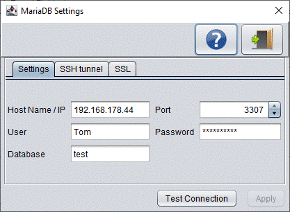

Export from a remote database

Buttons
Button
Description
Shows this help screen
Exits this screen
Test Connection
Test the connection settings
Apply
Apply the changes made on this screen
Settings
Host name / IP
Connect to the database server on the given host. The default host name is localhost, which is the local computer you are currently connected on.
Port
The TCP/IP port number to use for the connection. The default port is 5432 for PostgreSQL and 3306 for MySQL and MariaDB.
User
The database user account for connecting to the database.
Password
The password of the database user account.
Database
The database on the database server you'd like to connect to.